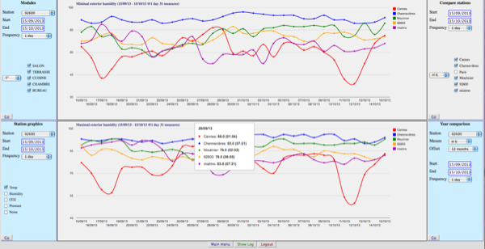

This program uses the Netatmo php sdk and some Google development tools for the graphics.
It also uses some other programs to compute data about the moon:
- MoonPhase.php is under an MIT license
- Moonime.php is under an GPL license
The server needs to have a php version >= 5, with curl and json enabled.
If you have a Netatmo account, you can see a demo at Netatmo.
The goal of this program is to display all the available measures and data of the stations
and interactively draw graphics.
Main windows
- Display the last measures on a Google map of all the stations and all their modules.
- Graphics of the measures of each station:
(5 minutes, 30 minutes, 1 hour, 3 hours, 1 day, 1 week).
- Graphics comparing the outdoor measures of selected stations: temperature, humidity or pressure,
(1 day or 1 week),
- Graphics comparing the measures of all your modules: temperature, humidity, noise, amount of rain, wind
(30 minutes, 1hour, 3 hours, 1 day or 1 week),
- Graphics comparing the exterior temperatures or exterior/interior humidity or rainfall with the previous years, semester or month,
(1 day or 1 week),
-
The wind speed and direction.
Google map mouse actions
- Move over a green marker, to display the measures of a station and all its modules and:
- The sunrise and sunset are computed with a zenith of 90.8333 (astronomical time).
- The phase of the moon (0-new moon 25-first quarter 50-full moon 75-last quarter 100-new moon).
- Moonrise, moonset (the moonset time is appended with a + if it falls the following day).
- Left click on a green marker increases the zoom.
- Right click on a green marker to hide the marker.
- Left click on Home to redraw the map to original position,
- Left click on Hide Markers / Show Markers to hide or restore the green markers.
Icons : Display the measures of a station
- The Dewpoint is displayed in dark red under the outside temperature ,
- Move over a measure to display the date of the measure,
over the station name, to display the latitude and longitude of the station.
All graphics
-
Dates of measures
-
If you set the date of the beginning of the measures to the date of the end of the measures,
the program
computes the starting date automatically according to the frequency of measures:
| Frequency | Period of measures |
|---|
| 1 week | 6 months |
| 1 day | 1 month |
| 3 hours | 2 weeks |
| 30 minutes | 2 days |
| 5 minutes | 1 day |
Zooming and erasing curves
-
If you click on the name of a curve (the squares inside the drawing), the corresponding curve will be erased
and the drawing will be rescaled without reloading the data.
-
To zoom, click on a point of the curve: the frequency of measures will be increased (if possible),
if the curve has less than 20 points and the frequency is maximal, nothing will happen.
By default, this zoom feature is disabled on Ipad.
The buttons ← x → o;
- ← displays the previous period
- → displays the next period
- x increases the displayed period
- o reset the defaults
Other remarks
- The Netatmo settings define the language used (French/English) and the temperature, pressure and wind speed units.
- To reload the units, you should load the main window (Google map).
- The program uses cookies to save: the token, the map type, the zoom factor and the center of the map
Install
To get a CLIENT_ID and a CLIENT_SECRET, you have to create an aplication. (create an application ).
To get a Google API key visit Google console .
(The key is free and obtained within minutes.)
- Unzip the archive
- Put your client_id, client_secret and google_key in Config.php.EXEMPLE and renamed it Config.php,
- open index.html in your web browser
Screenshots
Main screen
Graphics
| Graphics of one station. |
Comparing the temperature among modules of one station. |
|
|
| Comparing the humidity among stations. | Comparing temperatures with previous year. |
|  |
|
| Pluviometry. |
 |